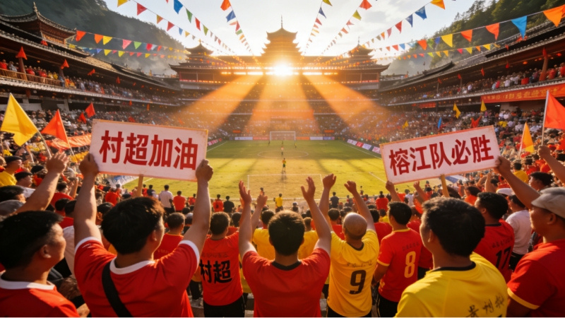
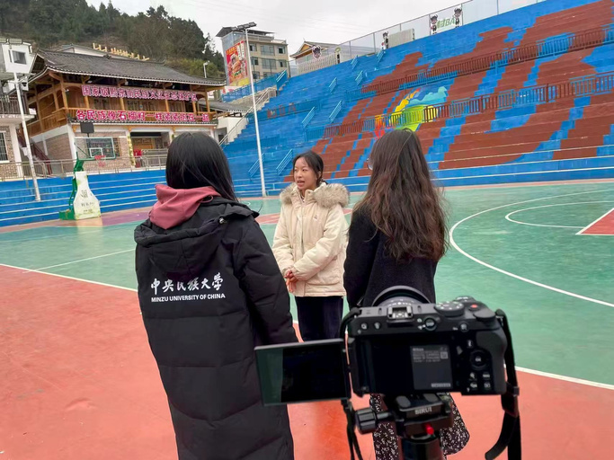
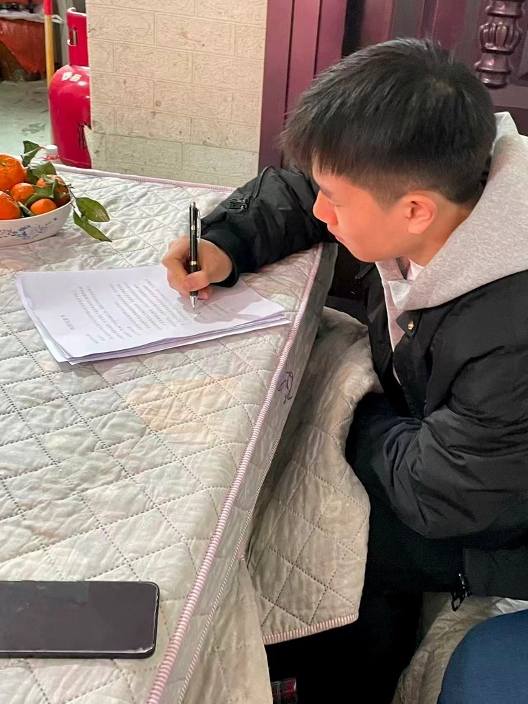
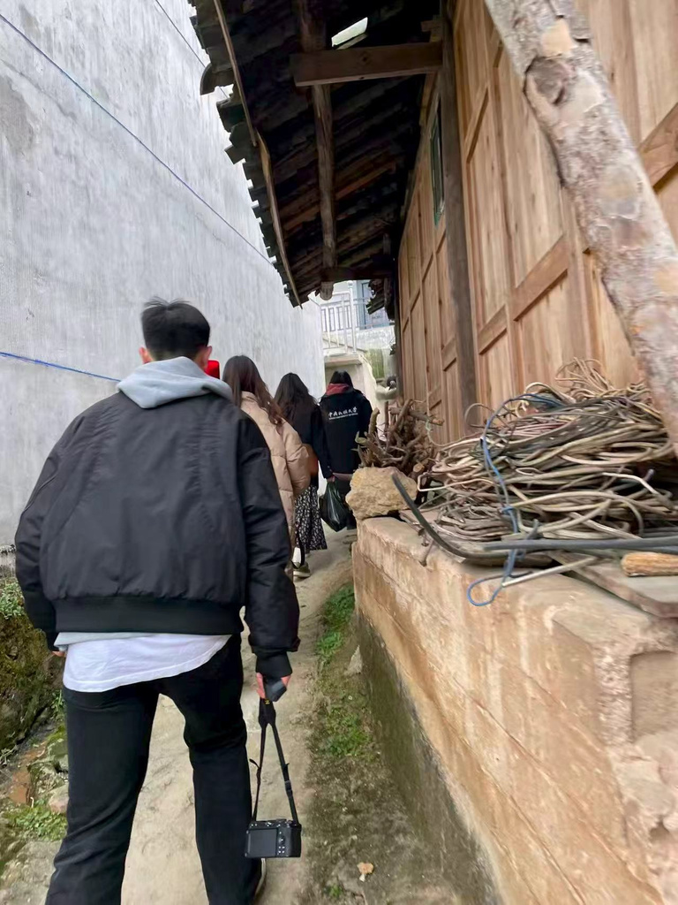
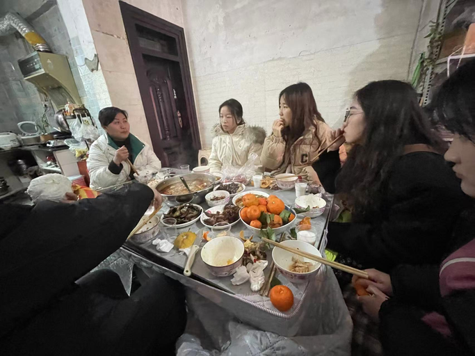

Line One
从群众足球到乡村振兴的五个入口
“村超”通过群众参与聚集人气，通过民族文化形成特色，通过文旅消费带动产业，通过数字传播扩大影响，通过多主体参与提升基层治理能力。
产业振兴
文化振兴
人才回流
组织协同
形象提升
Rongjiang Village+ Model
以贵州榕江“村超”为核心案例，一条主线解释群众赛事如何带动产业、文化、人才、组织与乡村形象，另一条主线聚焦民族地区体育赛事在洪涝灾害后如何修复空间、秩序、产业链与社会信心。
Research Design
论文将“村超”从单一赛事拆解为“村民主体、民族文化、产业承接、数字传播、政府兜底、协同治理”的复合系统。网页把这一系统做成可切换的双线叙事，便于答辩时先讲清乡村振兴效应，再进入民族体育赛事受灾后的恢复路径。
Line One
“村超”通过群众参与聚集人气，通过民族文化形成特色，通过文旅消费带动产业，通过数字传播扩大影响，通过多主体参与提升基层治理能力。
研究对象
以村民为主体、以乡土文化为根基、以群众性赛事或公共文化活动为载体，连接文旅消费、数字传播、农特产品销售、非遗展示和基层治理。
灾后重建不只是恢复到灾前状态，更要提升乡村系统面对未来风险的吸收、适应与转化能力。
体育赛事、文化展示和旅游消费通过共同场景实现价值转化，赛事成为产业、文化和治理的连接平台。
案例研究、文献研究和描述性统计结合，资料来自政策文本、权威公开资料、学术研究和团队调研。
Before The Flood
“村超”能在灾后迅速成为重建抓手，源于灾前已经形成的群众基础、传播基础和产业基础。它不是外来项目，而是榕江社会内部生长出来的公共生活。
一年多接待游客 1169.24 万人次，县域人流和消费显著增长。
一年多旅游综合收入 130.7 亿元，赛事流量进入文旅消费链条。
2024 年新增文化旅游市场主体，带动餐饮、住宿、文创、电商扩张。
床位数从 5958 个增长至 11000 多个，接待能力被赛事倒逼提升。

Post-Flood Reconstruction
2025 年 6 月洪涝灾害对榕江造成复合冲击：赛事空间受损、产业链条中断、社会心理承压。一个多月后，“村超”以“感恩雄起·贵州超力量”为主题重启，球赛、民族歌舞、感恩巡游和消费场景共同构成恢复秩序、提振信心的公共仪式。
“村超”球场承载比赛、展演、游客集聚和夜间消费。灾后球场修复不只是设施修复，也是在向村民、游客和商户传递“榕江正在恢复”的确定性。
洪水淹没球场及周边区域，意味着赛事活动、商户经营、游客接待和地方形象展示同时中断。
足球比赛恢复日常秩序，非遗和美食活动恢复消费场景，感恩巡游连接救援者与受灾群众。
赛事从文旅 IP 转化为灾后重建的组织资源、信心资源和产业资源。
Mechanism Framework
论文认为，“村+”模式的价值不在于复制“村超”名称，而在于一套可解释、可迁移、但必须因地制宜的机制框架。
核心机制
村民既是球员、观众、志愿者，也是摊主、主播、非遗展演者和民宿经营者。赛事情感归属和利益关联，使其更愿意参与清淤、复业、接待、宣传和秩序维护。
Value And Boundary
论文强调，其他地区不应机械模仿足球赛和传播话术，而应从本地真实文化、群众基础和产业承接能力出发，形成差异化“村+”形态。
各地应从本地最有群众基础的体育、节庆、手工艺、音乐、饮食或农事活动出发，形成“村BA”“村排”“村跑”“村歌”“村T”等差异化形态。
Team Research
本网页根据《“村”字头赛事赋能乡村振兴：贵州榕江“村超”模式的创新和推广研究结题论文》重新组织，服务终期答辩展示，并突出“村字头赛事赋能乡村振兴”与“民族体育赛事灾后重建”两个重点。



